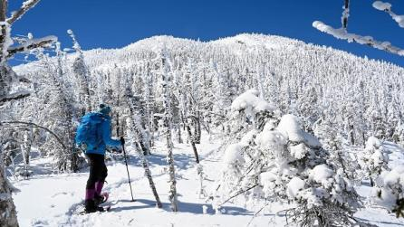
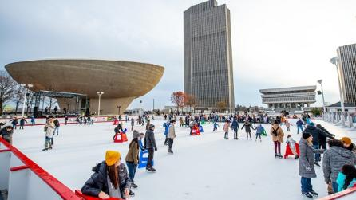

Places to Go in New York
New York State is historic. It's untamed. It's iconic. But more importantly, it's anything you want it to be. From the lights of Times Square to the mists of Niagara Falls, Lake Placid's Olympic legacy to Cooperstown's baseball roots, Albany's 400-year history to Jamestown's comedy treasures, the castles of the Thousand Islands to Long Island's Gold Coast mansions, the Hudson Valley's inspiring landscapes to the Catskills' sweeping mountain views and stunning Finger Lakes wine country— there’s something for everyone.
With top attractions that are totally worth the hype, like the Statue of Liberty and Strong National Museum of Play, unique experiences and hidden gem destinations there's no shortage of places to explore in New York.
Whether you're looking for a day trip, weekend escape, romantic getaway, or budget-friendly trips, find travel inspiration and itineraries by exploring our 11 unique vacation regions below and discover what it is that you LOVE about New York.
|  |  | |
|